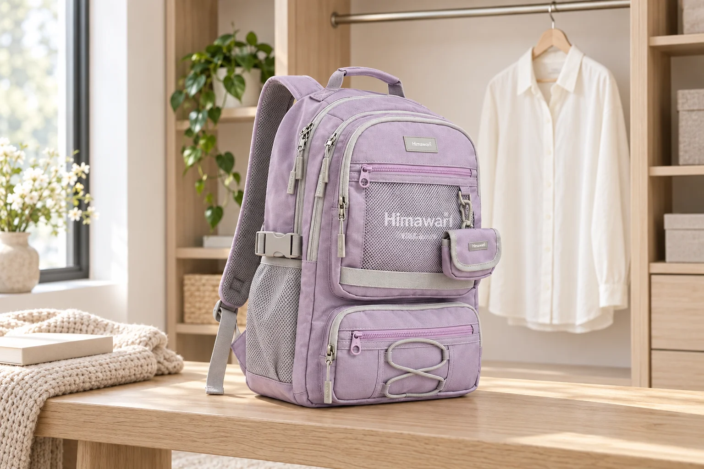

밝은 옷과 백팩이 만나는 자리를 먼저 살펴보기

밝은 셔츠와 백팩을 함께 고를 때는 거울에서 보이는 색 조합이 먼저 눈에 들어옵니다. 그러나 실제 사용에서는 어깨끈의 안쪽과 등 쪽처럼 정면 사진에 잘 보이지 않는 면이 옷에 닿습니다. 두 제품의 취급 안내를 읽고 맞닿는 위치를 살펴보면 관리할 부분을 구체적으로 정할 수 있습니다. 어떤 색이면 무조건 괜찮다고 단정하는 대신 지금 쓰는 옷과 가방의 상태를 봅니다.
옷과 가방의 라벨이나 제공된 안내에 색 묻어남, 물기, 마찰과 관련한 주의가 있는지 확인합니다. 서로 다른 제품이므로 한쪽의 안내만 읽고 둘을 같은 방법으로 관리하지 않습니다. 원단 이름이 같아 보인다는 이유로 취급 방법까지 같다고 생각할 필요는 없습니다. 안내를 찾기 어려우면 제품과 문의할 항목을 정확히 적어 판매처에 확인할 수 있습니다.
어느 면이 실제로 닿는가
평소 소지품을 넣은 가방을 메고 어깨에서 끈이 놓이는 위치를 봅니다. 옷깃이나 소매 쪽이 접혀 들어가는지, 등과 허리 쪽에 가방이 어떻게 놓이는지 살펴보세요. 혼자 보기 어려운 부분은 거울을 이용하거나 허락을 구해 사진으로 남길 수 있습니다. 제품의 정면 사진만 보고 몸에 닿는 전체 모습을 대신 판단하지 않습니다.
몇 걸음 움직인 뒤 옷과 가방의 위치가 바뀌는지도 확인합니다. 이는 이염이 생기지 않는다는 시험이 아니라 어느 부분이 계속 닿는지 관찰하는 방법입니다. 끈을 조절할 수 있는 제품이라면 실제 안내에 맞춰 조절하고 다시 메어봅니다. 더 세게 조이면 항상 좋은 상태가 된다고 생각하지 않고 평소 사용할 동작에서 위치와 불편한 부분을 함께 봅니다.
밝은 가방을 진한 옷 위에 쓸 때도 두 표면의 상태를 각각 확인합니다. 색이 발견되면 어느 쪽에서 옮겨온 것인지 바로 확정하기 어려울 수 있습니다. 함께 입은 옷과 가방의 맞닿은 위치를 기록하고 확인한 것과 추측한 것을 나눕니다. 눈에 보이는 자국을 모두 같은 원인으로 설명하기보다 지금의 상태부터 남기는 것이 문의에도 도움이 됩니다.
색 조합을 고르는 제품 자료로 Himawari No.9291을 함께 소개합니다. 마음에 드는 외출 조합을 정했다면 옷과 가방이 실제로 맞닿는 자리도 확인해보세요. 대표 이미지에서 나란히 놓인 모습과 몸에 멘 뒤의 접촉 상태는 다른 자료입니다. 오래 사용할 조합을 선택할 때는 각 제품의 취급 안내까지 함께 읽어봅니다.
젖은 뒤에는 두 제품을 나누어
외출 후 옷이나 가방이 젖었다면 함께 쌓아두기 전에 상태를 살펴봅니다. 가방을 겉옷 위에 얹어두는 대신 각각 정리할 자리를 마련할 수 있습니다. 어떤 방식으로 건조할지는 두 제품의 안내를 따릅니다. 눈에 보이는 물기가 없다는 이유로 전체가 같은 상태라고 생각하지 말고 실제 닿았던 부분도 확인합니다.
정리할 때는 옷을 벗은 뒤 가방의 등 쪽과 끈 안쪽을 보아두면 됩니다. 여러 물건을 한꺼번에 닦기보다 어느 제품을 어떤 방법으로 다룰지 먼저 정합니다. 잘 모르는 세정제를 바로 쓰지 않고 관리 표기를 확인하세요. 의류에 사용할 수 있는 방법이 가방에도 적절하다고 옮겨 적용하지 않습니다.
보관 장소에서는 옷과 가방이 오래 눌려 닿는 배치인지 볼 수 있습니다. 옷더미 사이에 가방을 끼워 넣으면 상태를 살피려고 다시 꺼내야 합니다. 서로를 분리해 둘 자리가 있으면 다음 외출 전에 표면을 보기 쉽습니다. 보관 자리를 바꾸는 이유는 모든 이염을 막는 보증보다 사용한 두 물건을 각각 확인할 수 있게 하기 위해서입니다.
낯선 자국을 발견했을 때 남길 정보
옷이나 가방에서 새로운 색 자국을 보았다면 먼저 서로 떨어뜨리고 위치를 기록합니다. 전체 모습과 해당 부분이 보이는 사진을 남길 수 있습니다. 언제 발견했는지, 어떤 옷과 가방을 함께 사용했는지, 젖은 상태를 보았는지처럼 자신이 아는 사실만 적습니다. 확인하지 않은 사용 조건을 원인으로 단정할 필요는 없습니다.
가루나 먼지인지 색이 옮겨간 것인지 불분명하면 세게 문질러 확인하려 하지 않습니다. 제거 방법이 명확하지 않은 상태에서 제품을 바꾸는 조치를 먼저 하면 처음 상태를 설명하기 어려울 수 있습니다. 제품의 관리 안내를 찾아보고 해결되지 않으면 사진과 제품 정보를 함께 전달해 문의합니다. 지워질 수 있는지와 어떤 방법을 써야 하는지는 해당 안내로 확인합니다.
문의할 때는 단순히 '색이 묻었어요'라고 쓰기보다 부위와 사용한 조합을 설명합니다. 가방에서 옷으로인지 반대인지 모르면 그 점도 그대로 말합니다. 특정 색상 제품이라 언제나 생기는 현상이라고 판단하지 않고 받은 답의 범위 안에서 다음 사용을 정합니다. 이전에 같은 조합을 썼다고 현재 상태까지 같다고 생각하지 않습니다.
다음 외출에서는 확인이 끝난 제품과 관리된 옷을 각각 살펴봅니다. 아직 해결되지 않은 부분이 있다면 같은 조합을 그대로 반복할지 다른 옷이나 가방을 선택할지 결정합니다. 짧게 메어보았다는 결과를 장시간 사용의 보증으로 남기지는 않습니다. 관찰한 위치와 처리한 내용이 연결되어 있어야 이후 다른 상태가 생겼을 때 비교할 수 있습니다.
색을 맞추는 즐거움과 사용 후의 확인은 함께 이어갈 수 있습니다. 가방 정면뿐 아니라 옷에 닿는 면을 보고, 귀가하면 두 제품을 각자의 관리 방법으로 정리합니다. 다음날 꺼낼 때에도 어깨와 등 쪽의 상태를 확인하세요. 실제로 사용한 조합과 보이는 변화를 짧게 남겨두면 어떤 점을 다시 물어볼지 구체적으로 정할 수 있습니다.